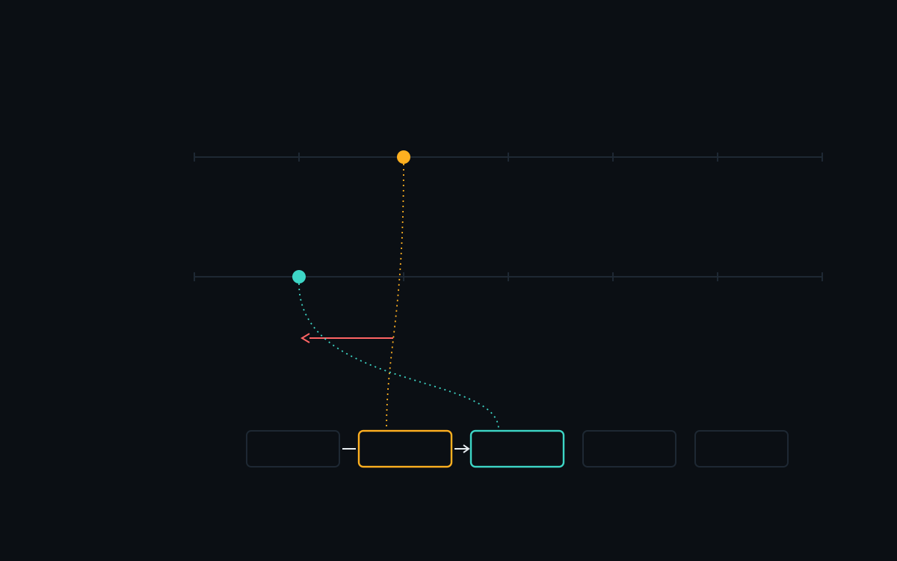

10:00:00 10:00:01 10:00:02 10:00:03 10:00:04 10:00:05 10:00:06 BANK A clock on time 10:00:00 10:00:01 10:00:02 10:00:03 10:00:04 10:00:05 10:00:06 BANK B clock 2.5 s slow payment · stamped 10:00:02.0 reversal · stamped 10:00:01.0 by timestamp, the reversal came first SHARED ORDER proposed #4416 #4417 #4418 #4419 #4420 by order, payment then reversal Which came first? V05 · TWO CLOCKS · instrument-dark · timelines · ORDER ≠ TIME · values illustrative